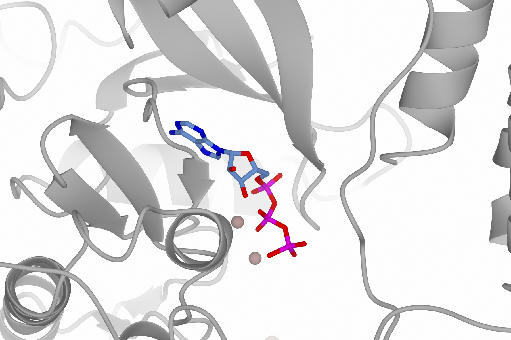
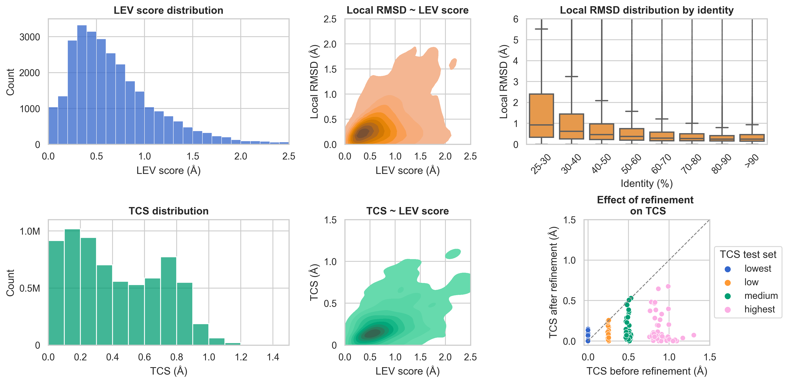
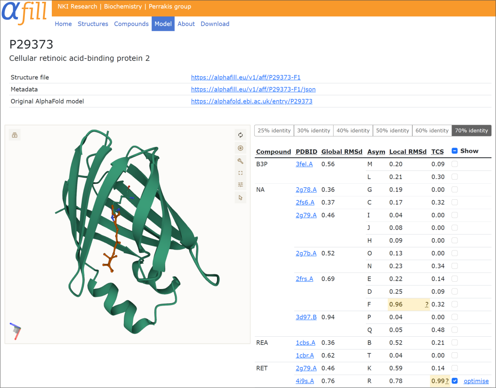

Completing Predicted Structures
When DeepMind released the AlphaFold Protein Structure Database in 2021 with predictions for nearly every known protein sequence, one limitation was immediately apparent: the models contained no ligands, cofactors, or metal ions (Jumper et al. 2021). A kinase was predicted without its ATP. A heme protein appeared without its iron-porphyrin ring. An alcohol dehydrogenase sat empty-handed, its catalytic zinc missing from the active site. For anyone interested in how a protein actually works (how it binds a substrate, coordinates a metal, or gets switched on by a small molecule), these predicted structures were incomplete in a way that mattered.
The problem was not a failing of AlphaFold itself, but a consequence of the question AlphaFold was designed to answer. The network takes an amino acid sequence and returns 3D coordinates for backbone and side-chain atoms. It predicts protein structure, full stop. Ligands, cofactors, ions, water molecules, post-translational modifications, and lipid anchors are all absent from the prediction.1 They are absent not because the model failed to find them, but because it was never asked to look.
1 AlphaFold2 predicts coordinates for standard amino acid atoms only. Newer variants like AlphaFold3 have begun to address small-molecule and nucleic acid interactions, but the AlphaFold Protein Structure Database models discussed here are AlphaFold2 outputs.
This absence matters more for some proteins than for others. A structural biologist studying the overall fold of a small globular domain may not care whether the model includes a bound phosphate. But for someone studying enzyme mechanisms, drug binding, or metalloprotein function, the missing pieces are the whole point. A cytochrome P450 without its heme is a shell. A zinc finger without zinc is a random loop. The fold may be correct in a geometric sense, but the functional context is gone.
Hekkelman et al. at the Netherlands Cancer Institute set out to fill this gap (Hekkelman et al. 2023). Their tool, AlphaFill, takes a conceptually simple approach: if AlphaFold does not predict ligands, borrow them from experimental structures that do contain them. Find a homologous protein in the Protein Data Bank that has a bound ligand, superpose the experimental structure onto the AlphaFold model, and copy the ligand coordinates over. The idea is old (homology transfer of functional annotations has been standard practice since the early days of bioinformatics), but the execution at database scale was new, and the results filled a gap that the structural biology community needed filled.
What predicted structures are missing
To appreciate why AlphaFill exists, it helps to take stock of what AlphaFold models actually contain and what they leave out. An AlphaFold prediction includes coordinates for all non-hydrogen atoms in the polypeptide chain: backbone N, C\(_\alpha\), C, and O atoms, plus the side-chain heavy atoms for each residue. Each residue also carries a per-residue confidence score, the predicted local distance difference test (pLDDT), which ranges from 0 to 100 and reports how confident the network is in the local structure around that residue.2
2 pLDDT scores above 90 indicate high confidence and typically correspond to well-resolved core regions. Scores below 50 usually indicate disordered or poorly predicted segments. The region between 70 and 90 is where careful judgment is required.
3 The fraction of metalloproteins varies depending on how you count. Estimates from the PDB suggest that 30–40% of deposited structures contain at least one metal ion, though many of these are crystallographic artifacts like crystal-packing contacts with buffer components.
What the model does not include falls into several categories. The most obvious are small-molecule ligands: substrates, products, inhibitors, cofactors like NAD\(^+\), FAD, pyridoxal phosphate, and other molecules that sit in binding pockets during catalysis or regulation. Then there are metal ions. Roughly a third of all proteins in the PDB contain at least one metal ion (zinc, iron, magnesium, manganese, calcium, copper), and these metals are often required for structural integrity (as in zinc fingers) or catalytic activity (as in metalloenzymes).3 Post-translational modifications such as phosphorylation, glycosylation, acetylation, and ubiquitination are also absent. So are covalently bound prosthetic groups like the retinal in rhodopsin or the biotin in carboxylases.
Water molecules deserve separate mention. Crystallographic structures routinely contain hundreds of ordered water molecules, some of which are functionally important: buried waters that mediate hydrogen bonds between protein and ligand, or structural waters that stabilize particular loops. AlphaFold predicts none of these.
The practical consequence is that an AlphaFold model, viewed in a molecular viewer, looks like an empty building. The architecture is there, but the furniture is missing. For the roughly 200 million structures in the AlphaFold database, this means 200 million models that tell you what the protein looks like but not what it does.
The AlphaFill pipeline
The core idea behind AlphaFill is homology-based ligand transplantation. Given an AlphaFold model of protein \(X\), the pipeline searches the PDB for experimentally determined structures of proteins similar in sequence to \(X\). When a homologous structure is found that contains a ligand, the experimental structure is superposed onto the AlphaFold model, and the ligand coordinates are transplanted, copied from the experimental frame of reference into the AlphaFold model’s coordinate system.
The pipeline proceeds in several stages.
Sequence search
For each AlphaFold model, the amino acid sequence is searched against the sequences of all PDB entries using a fast sequence comparison method.4 The search returns a ranked list of PDB structures with sequence identity above a minimum threshold. Each hit that contains at least one non-polymer ligand, metal ion, or modified residue is retained as a potential donor.
4 The original AlphaFill implementation uses a BLAST-like search, but conceptually any fast sequence search tool would work. The key requirement is speed: the pipeline must process hundreds of millions of models.
Sequence identity is computed over the aligned region, not the full sequence. This distinction matters because domain-level homology is often sufficient. A protein might share 60% identity with a PDB structure over a 150-residue kinase domain, even if the full-length sequences differ substantially outside that domain. The aligned region is what determines whether the binding site geometry is conserved, and so the aligned-region identity is the right quantity to use.
Structure superposition
Once a donor structure is identified, the next step is to superpose it onto the AlphaFold model. The superposition is performed using the C\(_\alpha\) atoms of residues that were aligned during the sequence comparison step.5 This produces a rigid-body transformation (a rotation matrix \(\bm{R}\in \mathrm{SO}(3)\) and a translation vector \(\bm{t}\in \mathbb{R}^3\)) that maps the donor structure’s coordinates into the AlphaFold model’s reference frame. The transformation minimizes the root-mean-square deviation (RMSD) between the aligned C\(_\alpha\) positions: \[\label{eq:rmsd-transplant} \text{RMSD} = \sqrt{\frac{1}{N} \sum_{i=1}^{N} \|\bm{r}_i^{\text{AF}} - (\bm{R}\, \bm{r}_i^{\text{PDB}} + \bm{t})\|^2}\] where \(\bm{r}_i^{\text{AF}}\) and \(\bm{r}_i^{\text{PDB}}\) are the C\(_\alpha\) positions of residue \(i\) in the AlphaFold model and the PDB structure, respectively, and \(N\) is the number of aligned residues. The optimal rotation is found by the Kabsch algorithm, which solves a singular value decomposition of the cross-covariance matrix of the two coordinate sets.
5 Using C\(_\alpha\) atoms rather than all backbone atoms reduces the sensitivity to side-chain conformational differences. The superposition produces a rotation matrix \(\bm{R}\) and translation vector \(\bm{t}\) that minimize the RMSD between the aligned C\(_\alpha\) positions.
Ligand transplantation

After superposition, the ligand coordinates from the donor structure are transformed using the same \((\bm{R}, \bm{t})\) and placed into the AlphaFold model’s coordinate frame. The result is a new PDB file (or mmCIF file) containing both the original AlphaFold coordinates and the transplanted ligand.
A critical check at this stage is whether the transplanted ligand clashes with the protein. If a ligand atom overlaps with a protein atom (distance below a van der Waals contact threshold), the transplant is either flagged or rejected. Minor clashes can occur because the AlphaFold model’s side-chain conformations may differ slightly from those in the experimental structure, and these are often tolerable. Severe clashes indicate that the binding mode is probably wrong, and the transplant should be discarded.
Quality metrics
Not all transplantations are created equal. A ligand borrowed from a close homolog at 95% sequence identity is far more likely to be correctly placed than one from a distant homolog at 30% identity. AlphaFill reports several quality metrics to help users judge reliability.
The first and most important is the sequence identity of the donor. Hekkelman et al. found that transplants from donors with greater than 25% identity over the aligned region are generally geometrically reliable, in the sense that the transplanted ligand position agrees with experimental ligand positions when those are available for comparison. Below this threshold, the rate of incorrect placements rises sharply.6
6 The 25% threshold echoes a familiar boundary in structural biology: the twilight zone of sequence similarity, below which fold similarity can no longer be assumed. For ligand transplantation, the relevant question is not whether the fold is similar (AlphaFold has already predicted the fold) but whether the binding site is conserved. Binding site conservation tends to decay faster than overall fold conservation because even a few mutations in the binding pocket can alter ligand specificity.
The second metric is the local RMSD of the binding site residues. After superposition, the RMSD is recomputed using only the C\(_\alpha\) atoms of residues that are within a specified distance (typically 6 Å) of the transplanted ligand. A low local RMSD (below about 1.5 Å) indicates that the binding site geometry in the AlphaFold model closely matches the donor, and the ligand is probably in a reasonable position. A high local RMSD means the binding site has shifted or rearranged, and the transplanted coordinates may be unreliable.
The third metric is the global RMSD of the full superposition, which provides a coarser measure of structural agreement. And the fourth is the AlphaFold pLDDT score in the region around the transplanted ligand. If AlphaFold itself is not confident about the protein structure near the binding site, there is little reason to trust a ligand placed there.

Together, these metrics let a user filter the database and focus on high-confidence transplantations: those from close homologs, into well-predicted binding sites, with low local RMSD.
Validation
The most direct way to validate AlphaFill is to test it on cases where the answer is already known. If a protein has both an AlphaFold model and an experimental structure with a bound ligand, one can run the AlphaFill pipeline on the AlphaFold model, transplant a ligand from a different homolog, and then compare the transplanted ligand position to the experimentally observed one. The distance between the two ligand positions (measured, for instance, as the RMSD of corresponding ligand atoms) gives a direct measure of transplantation accuracy.
Hekkelman et al. performed exactly this test across a large set of proteins. For transplants from donors above 25% sequence identity, the median ligand RMSD was below 2 Å, and the vast majority of transplants placed the ligand in the correct binding pocket. Below 25% identity, the error distribution broadened considerably, with a growing fraction of cases where the ligand ended up in the wrong location entirely.
This validation establishes an operating envelope for the method. At high sequence identity, AlphaFill is reliable enough to use for functional annotation: if the pipeline says a particular AlphaFold model binds NAD\(^+\) in a particular pocket, that assignment can be trusted with reasonable confidence. At low sequence identity, the transplantations are hypotheses rather than assertions, and independent verification (docking calculations, molecular dynamics simulations, or experiments) is needed before drawing conclusions.
One subtlety in the validation is the distinction between correct pocket identification and correct binding mode. A transplanted ligand might land in the right pocket (the same cleft in the protein surface) but with an incorrect orientation. For small symmetric ligands like metal ions, orientation is irrelevant: a zinc ion is a zinc ion regardless of how it got there. For larger ligands like ATP or FAD, the orientation matters because it determines which functional groups are exposed to solvent, which are buried, and which interact with specific protein residues. AlphaFill reports the overall ligand RMSD but does not separately evaluate the binding mode, so users who need binding-mode accuracy should examine the transplanted structures carefully.
Scale of the database
As of its initial publication, the AlphaFill database contained over 12 million individual ligand transplantations across hundreds of thousands of AlphaFold models (Hekkelman et al. 2023). These transplants cover a wide range of ligand types: small organic molecules (substrates, products, drugs), metal ions (Zn\(^{2+}\), Mg\(^{2+}\), Fe\(^{2+/3+}\), Ca\(^{2+}\), Mn\(^{2+}\), Cu\(^{2+}\)), nucleotide cofactors (ATP, ADP, GTP, NAD\(^+\), NADP\(^+\), FAD, FMN), coenzyme A and its derivatives, heme groups, and various modified residues.
The sheer number of transplantations means that most proteins in commonly studied organisms have at least one AlphaFill entry. For model organisms like E. coli, S. cerevisiae, and H. sapiens, the coverage is dense: many enzymes have multiple transplanted ligands from different donors at different sequence identity levels, giving users a range of options to choose from. For less-studied organisms, coverage depends on whether close homologs with bound ligands exist in the PDB.

The database is searchable by UniProt accession, protein name, or organism. Each entry shows the AlphaFold model with its transplanted ligands color-coded by sequence identity, and users can toggle individual ligands on and off to examine alternative placements. The underlying data are also available for bulk download, making it possible to incorporate AlphaFill annotations into computational pipelines.
AlphaBridge: connecting predicted and experimental data
AlphaFill addresses one direction of the relationship between predicted and experimental structures: it takes experimental ligand information and adds it to predicted models. But the relationship runs in both directions. Predicted structures can also inform the interpretation of experimental data, and this reverse flow has become increasingly important as cryo-electron microscopy generates maps at moderate resolution where model building is difficult.
The concept behind AlphaBridge is to use AlphaFold models as starting points for interpreting experimental data. When a cryo-EM map is obtained at 4–6 Å resolution, the density may be sufficient to identify the overall fold and domain arrangement but insufficient to place individual side chains or small ligands. An AlphaFold model of the same protein (or a homolog) can be docked into the density as a rigid body, providing atomic coordinates that would be difficult to build from the map alone. The predicted structure acts as a bridge between sequence and experimental density.
This approach is not unique to AlphaFold. Homology models have been used for molecular replacement in X-ray crystallography for decades, and the concept of fitting a known structure into a cryo-EM map is standard practice. What changed with AlphaFold is the accuracy and coverage. Previous homology models were often too inaccurate for molecular replacement to succeed, especially for targets with low sequence identity to known structures. AlphaFold models are frequently accurate enough to work, and they exist for nearly every protein sequence.
The practical workflow combines predicted structures with experimental restraints. An AlphaFold model is placed into the experimental density, then refined against the data. During refinement, the model coordinates are adjusted to better fit the observed density while maintaining reasonable stereochemistry. The refinement can incorporate AlphaFold’s confidence scores as restraint weights: regions with high pLDDT are held more tightly to their predicted positions, while regions with low pLDDT are allowed to move freely in response to the experimental data.7
7 This use of pLDDT as a refinement weight is an elegant inversion of its original purpose. AlphaFold produces pLDDT as a self-assessment of prediction quality. In the AlphaBridge context, it becomes a prior on how much to trust the predicted coordinates during experimental refinement.
The result is a hybrid structure that is neither purely predicted nor purely experimental. In well-resolved regions, the experimental data dominate and the structure reflects the true conformation in the crystal or vitrified sample. In poorly resolved regions, the AlphaFold prediction fills in details that the data alone cannot resolve. The boundary between data-driven and prediction-driven regions can be identified from the local correlation between the model and the map, giving users a residue-by-residue picture of which parts of the structure are experimental and which are predicted.
Limitations and caveats
AlphaFill’s strength is its simplicity: superpose and copy. But that simplicity carries assumptions that fail in specific and instructive ways.
Induced fit
The most fundamental assumption in AlphaFill is that the protein conformation does not change upon ligand binding. The AlphaFold model represents an apo-like state (no ligand bound), and the transplanted ligand is dropped into this apo conformation. For many proteins, this is a reasonable approximation: the binding pocket is pre-formed, and ligand binding involves minimal structural rearrangement.
But for proteins that undergo induced-fit conformational changes, the apo model may have a binding pocket that is the wrong shape for the ligand. A classic example is hexokinase, which undergoes a large domain closure upon glucose binding. The AlphaFold model of hexokinase may show the open conformation, with the two lobes of the enzyme separated. Transplanting glucose from an experimental structure of the closed conformation will place the substrate in a position that conflicts with the open-state geometry, because the residues that contact glucose in the closed state have moved.8
8 The magnitude of induced-fit motions varies enormously. Some enzymes show sub-Ångström rearrangements upon ligand binding (effectively rigid). Others, like kinases and polymerases, show domain motions of 5–15 Å. AlphaFill works well for the first category and poorly for the second.
AlphaFold itself sometimes predicts the holo (ligand-bound) conformation even without the ligand present, presumably because the training data included more holo structures than apo structures. In these cases, AlphaFill may actually work better than expected, since the predicted conformation already accommodates the ligand. But this behavior is unpredictable and protein-dependent, so it cannot be relied upon in general.
Allosteric and non-canonical binding sites
Orthosteric binding sites (the primary functional sites, such as the active site of an enzyme or the substrate-binding groove of a transporter) tend to be the most conserved across homologs and therefore the easiest to transplant. Allosteric sites, where regulatory molecules bind at locations distant from the active site, are more variable. Two homologous kinases may share the same ATP-binding site but differ in their allosteric pockets, so transplanting an allosteric modulator from one to the other is more likely to produce errors.
Non-canonical binding sites present an even harder problem. Crystallographic structures sometimes contain ligands bound at crystal-packing interfaces or adventitious binding sites that are not biologically relevant.9 AlphaFill will transplant these artifacts as readily as it transplants genuine substrates, because the pipeline has no way to distinguish between a functionally important ligand and a crystallographic artifact. The sequence identity filter helps (artifacts tend to appear only in a single structure, while real binding sites show up across multiple homologs), but it does not eliminate the problem entirely.
9 The PDB contains many instances of buffer molecules (glycerol, PEG, sulfate) bound at surface sites that are unlikely to have functional significance. AlphaFill can transplant these as readily as it transplants true substrates, so users must exercise judgment about which transplanted ligands are biologically meaningful.
Confidence filtering
The safest transplantations are those where several independent quality indicators agree. A transplant is most trustworthy when the donor sequence identity is high (above 50%), the local binding-site RMSD is low (below 1 Å), the AlphaFold pLDDT in the binding region is high (above 85), and multiple independent donors produce similar ligand placements. When all four conditions hold, the transplanted ligand position is likely to be close to what an experimental structure would show.
As any of these indicators degrades, the reliability of the transplant drops. The conditions are not independent: low sequence identity often correlates with high binding-site RMSD, and disordered regions (low pLDDT) are less likely to have conserved binding sites. A reasonable strategy for using AlphaFill in practice is to set minimum thresholds on sequence identity and pLDDT, then visually inspect the remaining transplants for steric clashes and chemical plausibility.
What AlphaFill does not do
AlphaFill does not attempt several classes of prediction. It does not predict whether a protein binds a particular ligand. It only transplants ligands that are observed in homologous structures; if no homolog has been crystallized with a given ligand, AlphaFill will not suggest it. It does not refine the ligand position after transplantation; the coordinates are copied and placed, but no energy minimization or molecular dynamics is performed to relax the ligand into the AlphaFold model’s binding site. It does not model conformational changes in the protein upon ligand binding. And it does not provide binding affinity estimates or predict whether the transplanted ligand would actually bind to the target protein.
These limitations define AlphaFill’s role in a structural biology workflow. It is a first-pass annotation tool, not a binding prediction method. It answers the question “where might a ligand sit in this protein?” rather than “does this protein bind this ligand?” The distinction is important, and users who conflate the two will overinterpret the results.
Practical considerations
Using AlphaFill outputs in downstream analyses requires some care. The transplanted ligand coordinates do not come with topology files, force field parameters, or bonding information beyond what is in the PDB chemical component dictionary. If the transplanted structure is to be used for molecular dynamics simulations, the user must generate appropriate parameters for the ligand, which is itself a non-trivial task for unusual cofactors or metal centers.
For docking studies, AlphaFill-enriched models can be used as receptor structures. The transplanted ligand can define the binding site location, after which the transplanted coordinates are removed and new ligands are docked into the empty pocket. This use case is well-matched to AlphaFill’s strengths: it identifies the pocket but does not commit to a particular binding mode, leaving that determination to the docking algorithm.
For homology modeling at moderate resolution, AlphaFill transplants can provide initial ligand placements that are then refined during model optimization. Many homology modeling programs expect the user to provide template structures with bound ligands, and AlphaFill-enriched AlphaFold models can fill this role.
Metal ions are a particularly common and valuable use case. Metal ion positions are often conserved across highly divergent homologs (because the coordinating residues are under strong selective pressure), and the transplantation is geometrically simple since a metal ion is a single point. For metalloprotein studies (zinc finger classification, iron-sulfur cluster identification, calcium-binding site annotation), AlphaFill provides a fast way to add metals to the thousands of predicted metalloprotein structures in the AlphaFold database.
Chapter notes
The AlphaFill method and database were published by Hekkelman et al. in Nature Methods in 2023 (Hekkelman et al. 2023). The database is freely available at https://alphafill.eu and is updated as new structures are deposited in the PDB and new AlphaFold models are released. The original AlphaFold method is described in Jumper et al. (Jumper et al. 2021), and the AlphaFold Protein Structure Database (maintained by the European Bioinformatics Institute) provides access to the underlying models.
The problem of completing predicted structures has a longer history than AlphaFill. Earlier efforts to add ligands to homology models date to the template-based modeling programs of the 2000s, including SWISS-MODEL and Phyre2, which could optionally include template ligands in their output models. What made AlphaFill distinctive was the scale of the undertaking (processing the entire AlphaFold database), the systematic quality annotation, and the public availability of the results as a searchable resource.
The use of predicted structures for molecular replacement in X-ray crystallography has been reviewed extensively since AlphaFold’s release. Several crystallographic software packages, including Phenix and CCP4, now incorporate AlphaFold models directly into their molecular replacement and refinement pipelines. The treatment of pLDDT as a refinement weight or B-factor prior has become standard practice in the structural biology community.
Readers interested in the broader question of how to combine predicted and experimental structural data should consult the growing literature on integrative structural biology, which seeks to combine data from X-ray crystallography, cryo-EM, NMR, cross-linking mass spectrometry, small-angle scattering, and computational prediction into unified structural models. AlphaFill and AlphaBridge represent specific instances of this general program.
For the computational details of structure superposition, the Kabsch algorithm remains the standard reference. The singular-value decomposition approach to optimal rotation was independently derived by Kabsch (1976, 1978) and has been reimplemented in virtually every structural biology software package. Modern implementations typically handle edge cases (degenerate point sets, reflections) that the original papers did not address, so readers implementing their own superposition code should consult both the original papers and a modern reference such as Coutsias et al. (2004).
The distinction between apo and holo protein conformations, and the phenomenon of induced fit, were first described by Koshland in 1958. The implications for ligand transplantation are straightforward: if the protein changes shape when the ligand binds, placing the ligand into the unbound shape will produce clashes or geometric distortions. The extent to which AlphaFold models represent apo versus holo conformations varies by protein and is an active area of investigation.